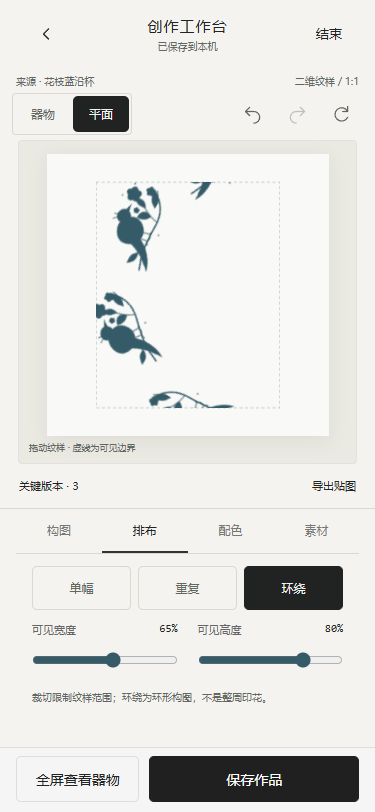

2026-10-30。继续复用原生H5、灵感输入、原SVG纹样、编辑历史与IndexedDB。项目根目录及父目录无AGENTS.md；本轮开始已复核项目和素材规范。仅实施二维编辑，不开发3D、不部署。
const result = await PatternTexture.export(draft, {
size: 1024, // 512 / 1024 / 2048
transparent: true
});
// result: {
// version: 'reborn-pattern-v1', blob: PNG Blob,
// width, height, mimeType: 'image/png', colorSpace: 'srgb',
// alpha: true, origin: 'top-left', uv: {u:'right', v:'down'},
// sourceObjectId, sourceMotifId, imageAssetId,
// layout, crop: {width, height}
// }导出使用当前SVG绘制规则，上传图以本机Blob嵌入后栅格化，输出包含透明通道；原图缺失会报错，不输出假成功。可见范围之外透明。transparent:false时包含画布底色。下一轮3D适配器负责目标区域、UV变换、flipY、实物尺度和曲面校验；当前接口不声称贴图已经适配任何GLB。
| 项目 | 结果 |
|---|---|
| 基础检查/构建 | npm run lint通过（24个JS语法、资源引用及CSS括号）；npm run build通过，两份单文件818612 bytes。 |
| 自动测试 | 69/69通过。新增关键版本不可变关联、切换可撤销、重置保留源图、12版本上限、删除不影响当前设计、迁移保留参数；原积分、存储与输入回归通过。 |
| 实际参数编辑 | Headless Edge移动视口修改缩放130、旋转30、x18、y-12、可见宽65、高80、蓝色；撤销/重做正确。实际触摸事件改变画布位置。 |
| 三种排布 | 实际画布含1/25/8份当前素材，三种画布截图摘要不同。 |
| 版本与恢复 | 保存两个关键版本、重置、切换、撤销/重做、刷新恢复通过。个人图片版本经过换回库纹样和刷新后，仍可恢复对应源图。 |
| 保存失败 | 测试浏览器注入本地提交失败：出现失败和重试；普通返回留在编辑器；恢复存储后重试保存145%缩放成功。没有修改用户浏览器真实数据或实际填满磁盘。 |
| 返回/退出/删除 | 返回灵感再进入参数保留；结束→继续或保存草稿退出→我的→重新进入均恢复；放弃需要二次确认，取消保留，确认删除后回我的。 |
| 贴图 | 上传图片关联的512px输出成功解码为512×512 PNG，来源ID与透明标记正确；1024px贴图下载成功。 |
| 窄屏布局 | 320×640、375×812、390×844、430×932均无横向溢出或整页纵向滚动，正方形画布完整位于舞台内，底部操作可见。截图检查发现并修复了绝对定位造成的画布裁边。 |
| 输入回归 | 第03轮上传、文字、手绘、返回刷新、继续编辑的浏览器测试通过。浏览器运行错误0。 |
测试为本机真实Edge引擎的移动视口/触摸模拟，不代表实体手机。Safari/微信WebView、系统软键盘与真实磁盘配额故障仍待验证。

在项目目录执行 $env:PORT='8879'，再 npm start。访问 本机8879首页，开始共创→选择输入→继续编辑。保持原浏览器/端口恢复本地记录。测试入口为 npm run lint、npm test、npm run build；浏览器脚本需Playwright与本机Edge，PLAYWRIGHT_MODULE可指定已安装模块。
当前是单素材简化纹样编辑，重复不是无缝接边设计工具，环绕不是曲面UV预览。裁切以中心矩形可见范围表示，非原图像素破坏式裁剪。单色效果保留透明度，将素材可见部分转为统一色。关键版本最多12个，编辑撤销历史沿用最近40步；浏览器清数据会删除本地档案，未做云同步或多窗口冲突处理。
外部AI、正式馆藏与摄影授权、3D器型模型、云端发布、馆方积分/审核及工厂授权均未接入。生产与真实权益需相关方确认。本轮停止，未发布，也未进入第05轮。